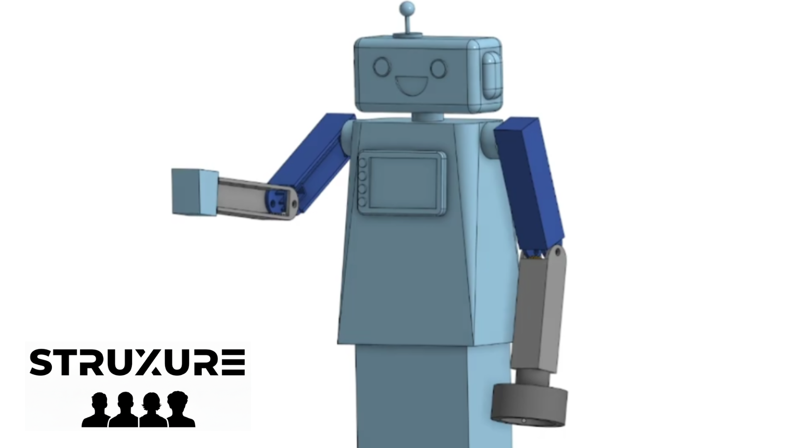
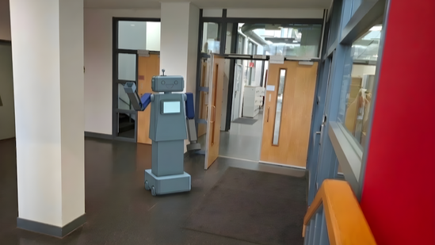
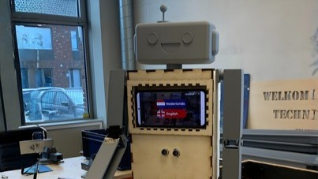

Wat hield het project in?
Voor de meesterproef heb ik samen met een team een robotconcept ontwikkeld en gepresenteerd. Het project combineerde ontwerpen, onderzoek en samenwerking, en gaf mij meer inzicht in hoe technische oplossingen ontstaan.
O&O · VWO 6
Tijdens mijn meesterproef heb ik gewerkt aan een robotontwerp voor TU Delft Robotica. Het project liet zien hoe ik technische ideeën kon omzetten naar een concreet en goed doordacht ontwerp.

Voor de meesterproef heb ik samen met een team een robotconcept ontwikkeld en gepresenteerd. Het project combineerde ontwerpen, onderzoek en samenwerking, en gaf mij meer inzicht in hoe technische oplossingen ontstaan.
Maanden lang heb ik samen met mijn team binnen O&O gewerkt aan het ontwikkelen van een robotconcept. Ik werkte actief aan het ontwerpen en het uitwerken van het concept. Door het proces heen leerde ik hoe belangrijk structuur, duidelijkheid en creativiteit zijn in technische projecten. De linker foto van de afbeeldingen hieronder toont een AI-gegenereerd beeld dat wij hebben gebruikt als verduidelijking voor het uiteindelijke robotontwerp. Het eindresultaat is een goed doordacht robotconcept dat we hebben gepresenteerd aan TU Delft Robotica.

